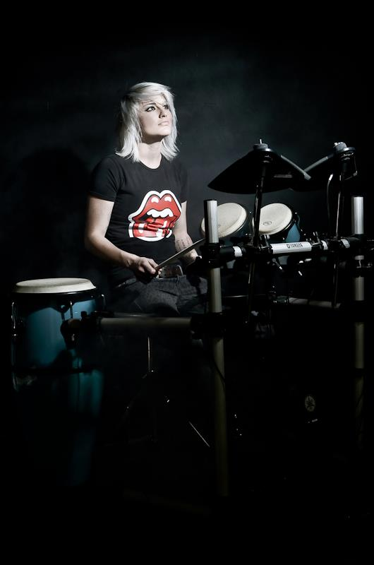
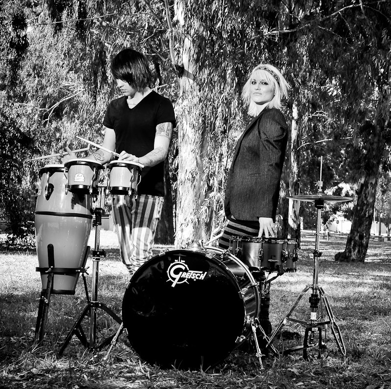
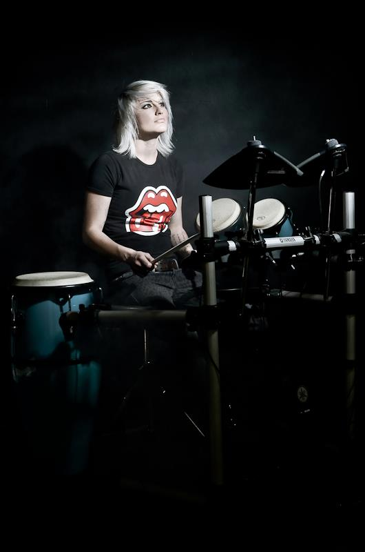
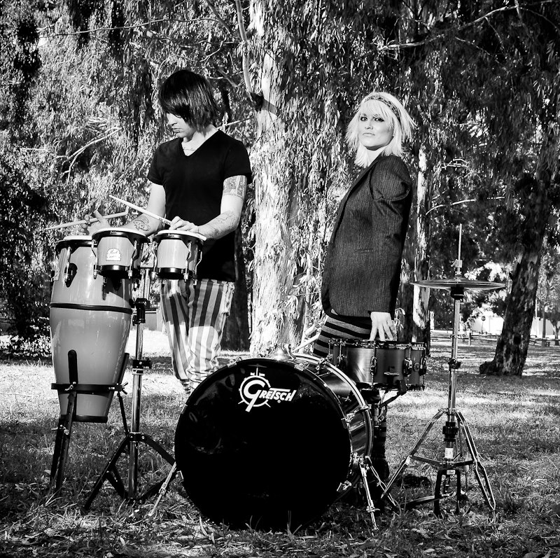
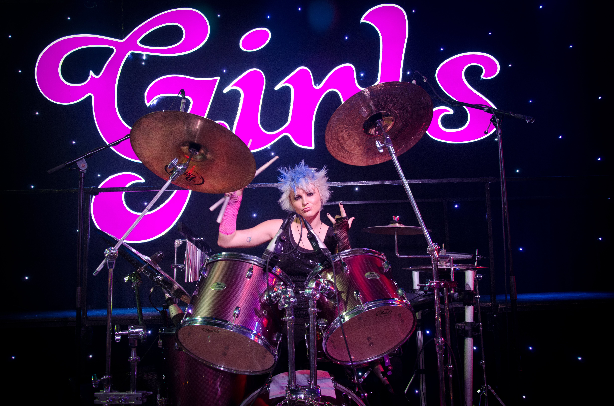
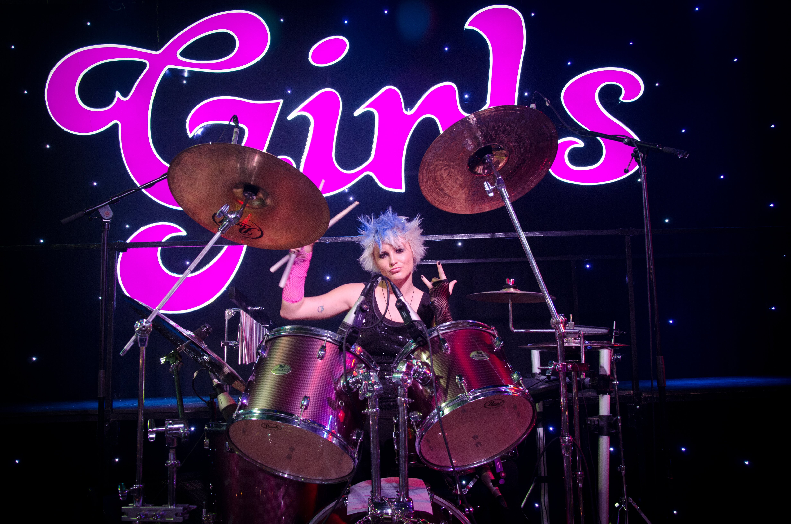

I was born with a love and passion for music; I have been
trained professionally as a drummer.
In 2007 I studied at the South African Music Institution (Groove
Regulators) where I qualified in Advanced Level in Music
Performance and I also received my Trinity Guildhall Grade 8
Diploma in Drum Kit.
I have been playing drums for over 10years, and during this time I
have been in various bands, playing a range of Jazz, Rock,
Acoustic, Percussion and Covers.
In 2011, I auditioned for The Barnyard Theatre and was accepted
as the 1st female drummer that had ever been picked for a show.
I joined their new production called “Girls Wanna
Rock”. The show consisted of 6 musicians and 6 vocalists in
which we played various cover songs that payed tribute to all
the female musicians throughout history. The show ran for
11months where we toured throughout South Africa.
In 2012, I auditioned for an entertainment company called
Beyond Red and Bluberry Entertainment.
I was picked as the drummer
for a production called “Chix Rock”. It ran for 6months at one
of Sun International’s biggest casino’s Carnival City.
I have also played percussion alongside DJ’s in various clubs in
South Africa.
I’ve always listened to a wide variety of music, from alternative rock to classical. I feel that you need to be flexible and have a broad scale of influences, as it helps you grow as an artist and become a better musician. Bands I like listening to include The Rolling Stones, The Police, Fleetwood Mac, Bon Jovi, 30 Seconds to Mars, Pink, The Eagles, Miley Cyrus, Joan Jett, Alanis Morissette, Paramore, and Tracy Chapman to name a few.

 



 
